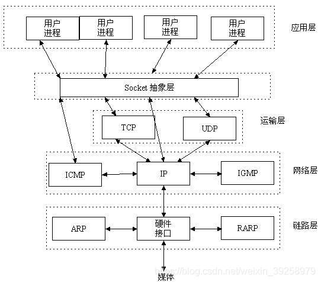
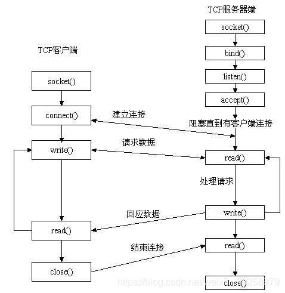
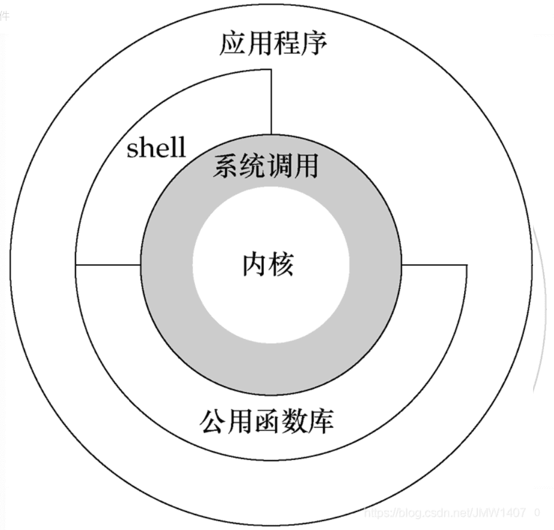
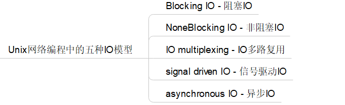
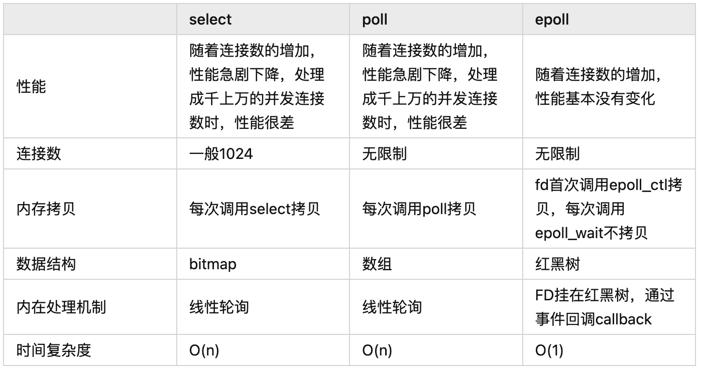
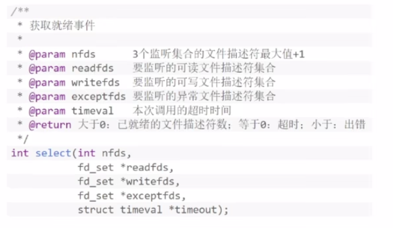
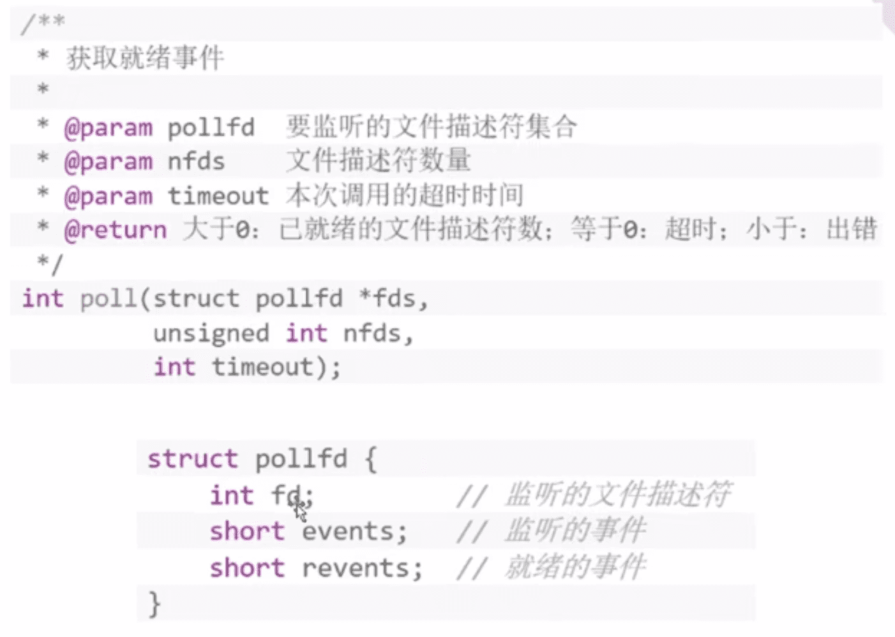
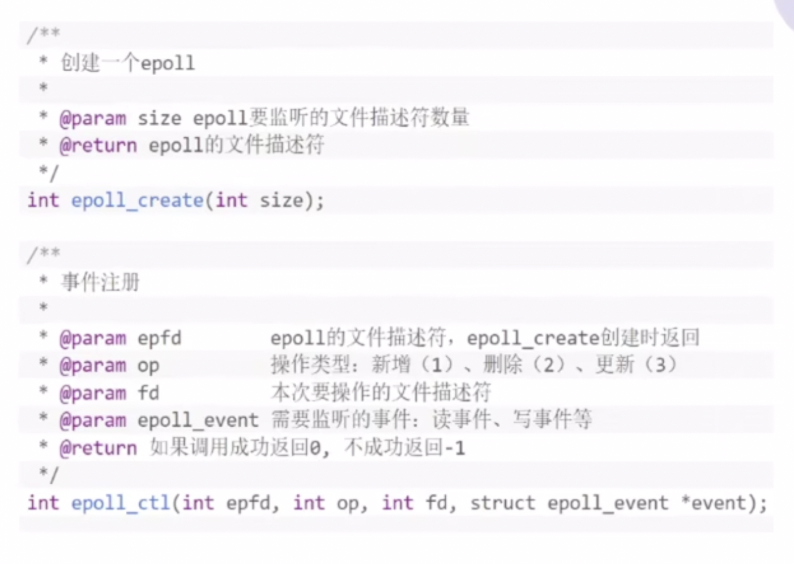
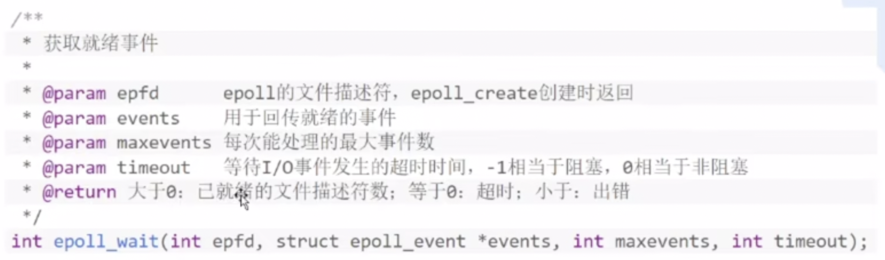
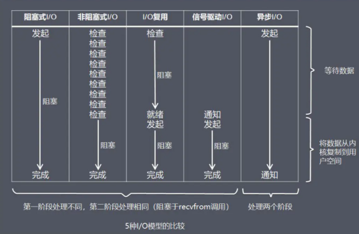

面试问到网络或者 Redis 时常考题
基本概念
Socket
套接字，用于网络中不同主机上应用程序间双向通信的端点的抽象，他将复杂的 TCP/IP 隐藏在 Socket 接口后面
- Socket 地址 = IP 地址:端口号
- 不同的协议，如 TCP，UDP 可同时使用相同端口号


对具体使用感兴趣的可以做下这个实验 计算机网络自顶向下 Lab，很有意思
FD(File Descriptor)
文件描述符，为非负整数，Linux 中一切资源都可以通过文件来访问和管理，FD 用于指向某一资源
阻塞与非阻塞
阻塞与非阻塞，描述调用者在等待返回结果的过程
- 阻塞：调用者发送请求后，会一直等待返回结果，当前线程被阻塞
- 非阻塞：调用者发送请求后，会立刻返回，当前线程不会阻塞，但调用需要定期轮询（一个个看）查看处理结果
例子：
阻塞/非阻塞：我在等你干活的时候我在干啥？
- 阻塞：啥也不干，死等
- 非阻塞：可以干别的，但也要时不时问问你的进度
同步与异步
而同步与异步，用于描述调用结果的返回机制（或者叫通信机制）。
- 同步：调用者发起请求后，会一直等待返回结果，即由调用者主动等待这个调用结果。
- 异步：调用者发起请求后，会立刻返回，但不会立刻得到这个结果，而是由被调者在执行结束后主动通知（如 Callback）调用者。
例子：
同步/异步：你干完了，怎么让我知道呢？
- 同步：我只要不问，你就不告诉我
- 异步：你干完了，直接喊我过来就行
以上的IO可以组合成4种组合方式：同步阻塞，同步非阻塞，异步阻塞，异步非阻塞
用户态和内核态
两种不同的权限等级
用户态
只能执行系统规定的指令，当需要执行某些系统特权指令（系统调用）时，需要切换到内核态 
内核态
能够执行特权指令，如：IO，内存分配等对硬件操作的指令
五种 I/O 模型

阻塞 I/O
优点：程序简单，线程挂起不会占用 CPU 资源
缺点：在高并发场景下，需要大量线程，那内存，线程切换开销是不可接受的
总之：不常用
非阻塞 I/O
优点：线程立刻返回，可以干别的活
缺点：不断轮询效率低，数据到达和轮询有时间差，所以响应延迟高
总之：不常用，最多使用非阻塞 I/O 的特性
I/O 多路复用
Redis 作为一个单线程的数据库，使用的就是 I/O 多路复用
Redis 快的原因？
- 基于内存操作
- 数据结构简单
- I/O 多路复用
- 主线程为单线程，避免上下文切换
unix 的 select()，poll()，linux 的 epoll() 系列都是同步非阻塞，windows 的 IOCP 是异步非阻塞
 优点：一个线程复用多个 Socket，避免了多线程创建，切换，销毁的开销
select
API 文档 
优点：解决了线程切换的问题
缺点：
- FD 最大默认为 1024
- 每次调用需要将 FD 从用户态拷贝到内核态
- 不知道哪个 FD 就绪，需要全部遍历
- 参数每次调用都要重置（因为
readfds, writefds, exceptfds要作为返回值）
poll
API 文档 
优点：解决了线程切换的问题
缺点：
FD 最大默认为 1024- 每次调用需要将 FD 从用户态拷贝到内核态
- 不知道哪个 FD 就绪，需要全部遍历
参数每次调用都要重置（因为readfds, writefds, exceptfds要作为返回值）
epoll
API 文档  
LT：Level-Triggered，水平触发（默认），epoll_wait
检测到事件后，如该事件没有处理完毕，后续 epoll_wait
都会返回该事件，更安全
ET：Edge-Triggered，边缘触发，epoll_wait
检测到事件后，只会在当次返回，不管该事件是否被处理完毕，更快
优点：解决了线程切换的问题
缺点：
FD 最大默认为 1024每次调用需要将 FD 从用户态拷贝到内核态不知道哪个 FD 就绪，需要全部遍历参数每次调用都要重置（因为readfds, writefds, exceptfds要作为返回值）- 跨平台不好，只支持 Linux
- 相比较 select，epoll 太重了，遇到监听连接数和事件较少的场景，select 可能更优
异步 I/O
一般为非堵塞，除非刻意堵塞
应用进程执行 aio_read
系统调用会立即返回，应用进程可以继续执行，不会被阻塞，内核会在所有操作完成之后向应用进程发送信号。
信号驱动 I/O
在信号驱动IO模型中，当用户线程发起一个IO请求操作，会给对应的socket注册一个信号函数，然后用户线程会继续执行，当内核数据就绪时会发送一个信号给用户线程，用户线程接收到信号之后，便在信号函数中调用IO读写操作来进行实际的IO请求操作。这个一般用于UDP中，对TCP套接口几乎是没用的，原因是该信号产生得过于频繁，并且该信号的出现并没有告诉我们发生了什么事情
异步 I/O 与信号驱动 I/O 的区别在于，异步 I/O 的信号是通知应用进程 I/O 完成，而信号驱动 I/O 的信号是通知应用进程可以开始 I/O。

总结
本文介绍了 I/O 操作的基本概念，常见 I/O 的五种模型，多路复用的三种方式
最后提几个问题供读者检验成果：
- 阻塞和非阻塞有何区别，取决于什么？
- 同步和异步有何区别？
- select，poll，epoll 有何区别？
- Redis 为什么快？
- 同一个端口可以同时给 TCP 程序和 UDP 程序使用吗？
- I/O 五个模型分别是什么？
- socket 是什么，socket 地址是什么？
参考
【小白也看得懂的 I/O
多路复用解析（超详细案例）-哔哩哔哩】
浅聊Linux的五种IO模型
用户态和内核态
深入理解redis——Redis快的原因和IO多路复用深度解析